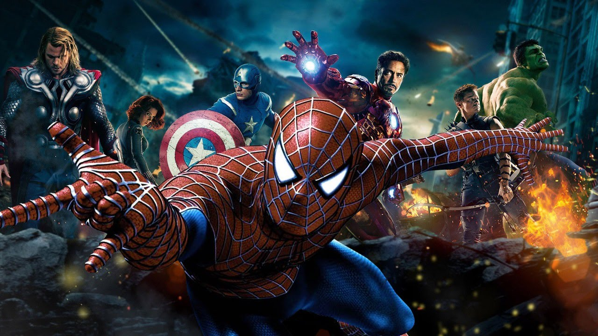

About Spidey
Spidey is the most incredible human being half spider you'll ever get to meet. He was biten by a spider and turned into a superhero, who lost his uncle but that just made him grow and become who he is now. I kind of want to sleep with him but he's a fictional character so I'll save that to my subsconscious being.
the group of friends he's in
His characteristics
- He can crawl across roofs
- When in combat, he shoots cobweb from his wrists
- He's practically able to fly when he bounces with his cobweb
Friends
He's not someone who's got a lot of close friends, but they are quality friends so it's not that important to have that many people around. Anyway, everybody loves him, so it's kind of like having the whole New York on your side. Links available for more information.